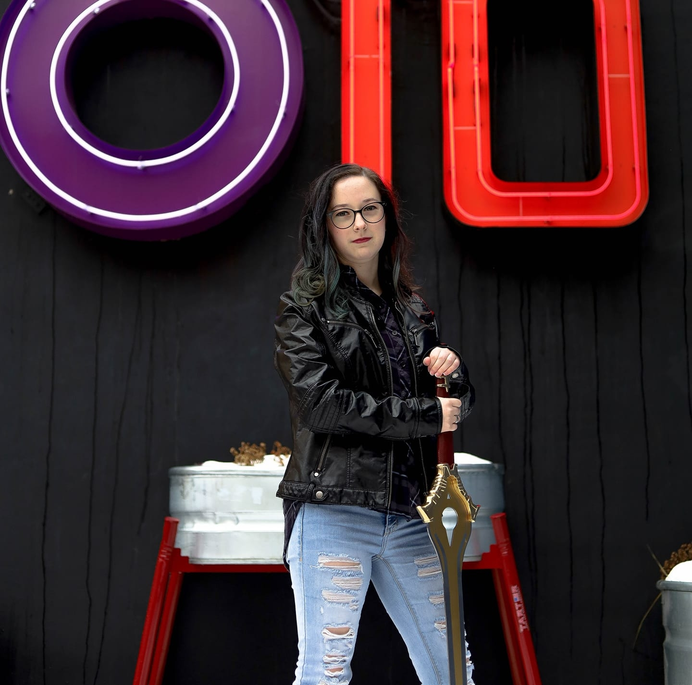

|  | I am from a small town in Missouri called Lone Jack,
I graduated from the high school there. Currently I am attending the University of Advancing
Technology as a Honors student pursuing a degree in Advancing Computer Science. When I am not working on any assignments or projects, I can be found playing video games or watching anime. Whatever I am doing, I am very likely listening to music as I am always listening to music. I am a big dog lover and have three little puppies of my own named Alfred, Oliver, and Winston. |